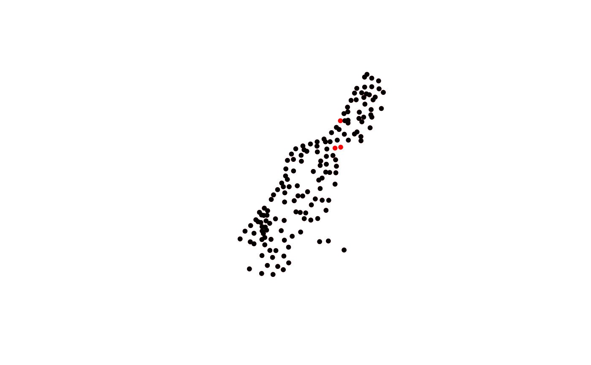

Removes row or column NA's in sp object
sp.na.omit(x, col.name = NULL, margin = 1)
| x | Object of class SpatialPointsDataFrame OR SpatialPolygonsDataFrame |
|---|---|
| col.name | The name of a specific column to remove NA's from |
| margin | Margin (1,2) of data.frame 1 for rows or 2 for columns |
This function will remove all NA's in the object or NA's associated with a specific column.
Jeffrey S. Evans <jeffrey_evans<at>tnc.org>
library(sp) data(meuse) coordinates(meuse) <- ~x+y # Display rows with NA meuse@data[!complete.cases(meuse@data),]#> cadmium copper lead zinc elev dist om ffreq soil lime landuse dist.m #> 20 12.9 95 284 1052 6.860 0.000000 14.8 1 1 1 <NA> 10 #> 43 1.2 21 48 167 8.180 0.266220 NA 1 2 0 Ga 320 #> 44 1.7 22 65 176 8.694 0.211843 NA 1 2 0 W 260# Remove all NA's in rows (and associated points) meuse2 <- sp.na.omit(meuse)#>#> [1] 155 12#> [1] 152 12# Remove NA's associated with specific column meuse2 <- sp.na.omit(meuse, col.name = "om") head(meuse@data)#> cadmium copper lead zinc elev dist om ffreq soil lime landuse dist.m #> 1 11.7 85 299 1022 7.909 0.00135803 13.6 1 1 1 Ah 50 #> 2 8.6 81 277 1141 6.983 0.01222430 14.0 1 1 1 Ah 30 #> 3 6.5 68 199 640 7.800 0.10302900 13.0 1 1 1 Ah 150 #> 4 2.6 81 116 257 7.655 0.19009400 8.0 1 2 0 Ga 270 #> 5 2.8 48 117 269 7.480 0.27709000 8.7 1 2 0 Ah 380 #> 6 3.0 61 137 281 7.791 0.36406700 7.8 1 2 0 Ga 470#> cadmium copper lead zinc elev dist om ffreq soil lime landuse dist.m #> 1 11.7 85 299 1022 7.909 0.00135803 13.6 1 1 1 Ah 50 #> 2 8.6 81 277 1141 6.983 0.01222430 14.0 1 1 1 Ah 30 #> 3 6.5 68 199 640 7.800 0.10302900 13.0 1 1 1 Ah 150 #> 4 2.6 81 116 257 7.655 0.19009400 8.0 1 2 0 Ga 270 #> 5 2.8 48 117 269 7.480 0.27709000 8.7 1 2 0 Ah 380 #> 6 3.0 61 137 281 7.791 0.36406700 7.8 1 2 0 Ga 470